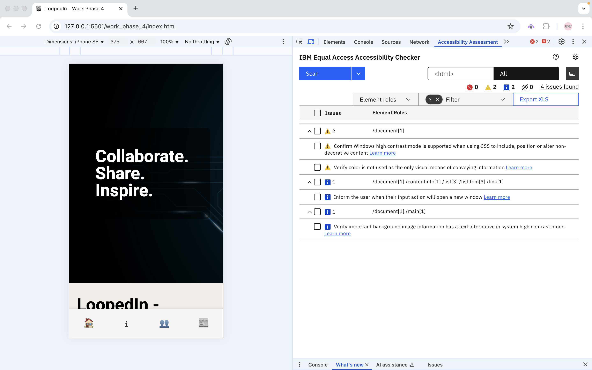

Implementation Rationale
Alignment with Client and User Needs
The LoopedIn website was developed in alignment with the Connect Communities Initiative (CCI) mission of fostering social cohesion and supporting community identity, with a particular focus on tech and innovation communities.
The project specifically addresses the Tech & Innovation Communities stream from the Client Brief, which emphasises creating platforms where innovators can connect, share knowledge, and build visibility for their work.
Throughout the design and implementation process, I prioritised features and structure that enable:
- Discovery (News section)
- Interaction (Community Feed and Join the Community functionality)
- Identity and representation (Hero section and About page)
The site provides two key interaction pathways:
- For community members — tech enthusiasts and innovators looking to connect, post, and engage.
- For the wider public — people who wish to explore the community and learn from it.
Accessibility and Ethical Considerations
Accessibility was integrated from the beginning, guided by WCAG 2.2 Level AA standards:
- Keyboard navigation with visible focus indicators.
- ARIA labels for icon-based navigation.
- Semantic HTML with clear heading structure.
- Appropriate
alttext for all images. - Colour contrast checked and adjusted to pass audit.
Ethical design was also a focus:
- Inclusive content and imagery.
- Transparent integration of third-party tools (newsletter).
- Mobile-first design for broad access.
In applying ethical design principles, I drew on the ACS Code of Ethics and structured reasoning approaches introduced in the course. Key stakeholders considered include:
- Site users (including potentially minors or marginalised groups)
- Site maintainers
- Developers
- Funders
Relevant ACS principles applied include:
- Primacy of Public Interest
- Enhancement of Quality of Life
- Honesty
The decision to implement the newsletter feature in a transparent, opt-in manner reflects this reasoning, with an emphasis on informed consent, privacy, and user autonomy.
Variations from A3 Design Proposal
As is natural in an iterative process, several adjustments were made during implementation based on technical feasibility and project scope.
The original site map proposed the following structure:

Key changes:
- My Profile, Chat, Events, and Search were not implemented, as they were deemed non-essential and outside current scope.
- Core pages now include: Home, About, Community Feed, News, and Join the Community.
- Implementation Rationale and GenAI Acknowledgement are included in the footer.
- Join the Community now builds on the Work Phase 3 API and functions as an initial post creation page.
- The News section supports external content curation and engagement.
Challenges and Strategies
Accessibility Implementation:
Initial challenges included ensuring proper ARIA labeling for icon navigation and consistent focus-visible styling across browsers.
Scope Refinement:
Proposed features like Chat and Profile were beyond scope; the focus shifted to delivering a high-quality core community experience.
Responsive Design:
Navigation was unified across desktop and mobile; layout grids were refined for consistent presentation on all devices.
Accessibility Audit
An accessibility audit was conducted on the Home page using the IBM Equal Access Accessibility Checker (Chrome extension).
After iterative improvements, the remaining issues are as follows:
- Needs review: Confirm that Windows high contrast mode is supported when using CSS to include, position or alter non-decorative content. This requires manual verification, as automated tools cannot fully assess high contrast support.
- Needs review: Verify that color is not used as the only visual means of conveying information. While underlines and outlines have been added for interactive elements, this is flagged for manual review to ensure full compliance.
- Recommendation: The Github link in the footer opens in a new window (target="_blank"). An ARIA label has been added to inform the user, but the automated tool still flags this as a recommendation for improved clarity.
- Recommendation: The background image used in the hero section. This image is decorative and does not convey essential content. No alternative text is required, but this is flagged for manual verification in high contrast mode.
Overall, the site now meets the key WCAG 2.2 Level AA requirements. The remaining items are either expected limitations of automated testing or flagged for manual review in future iterations.
A screenshot of the audit results is included below:
GitHub Repository
The full project code is available at:
https://github.com/JustBrochUQ/deco7140_development-